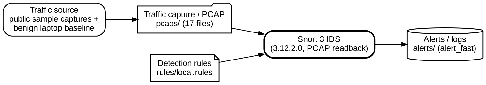
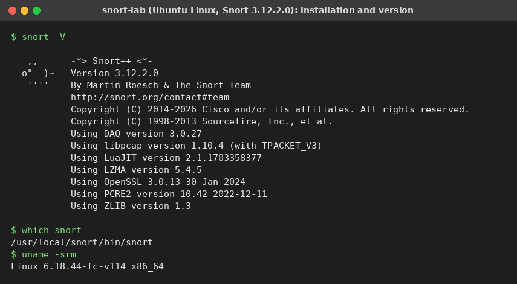
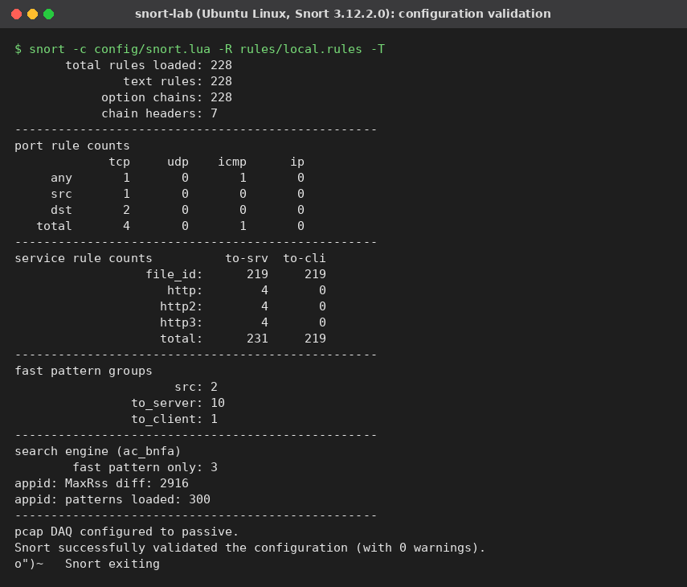
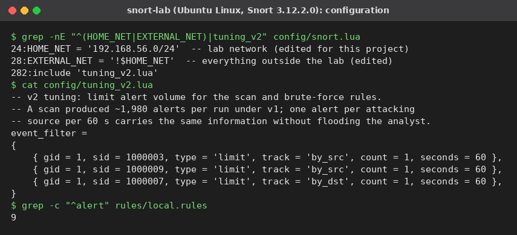
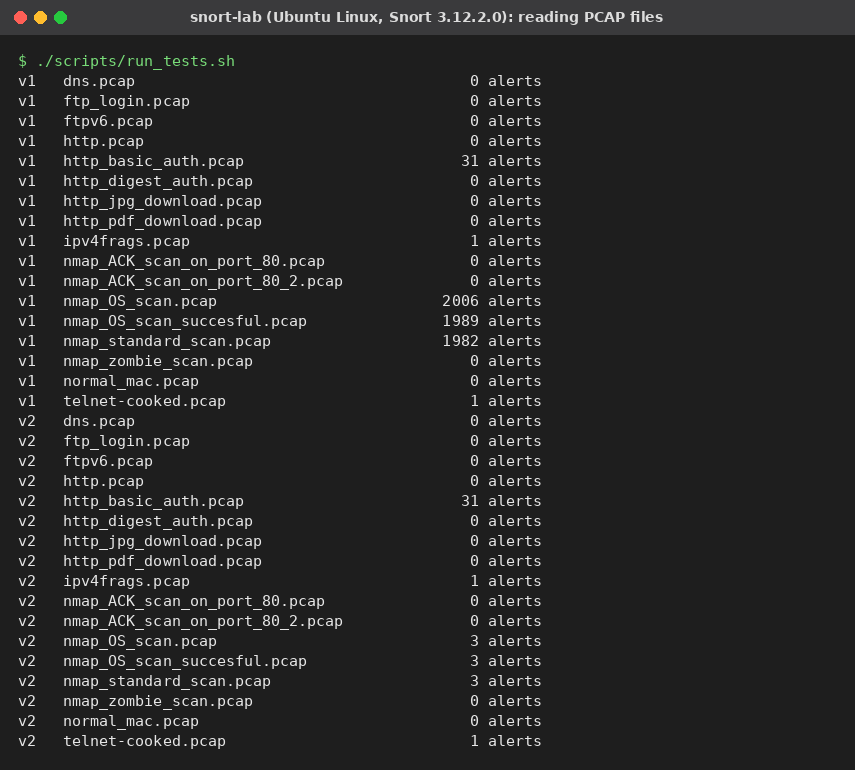
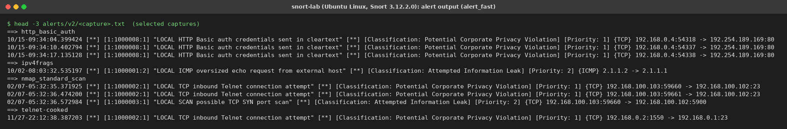
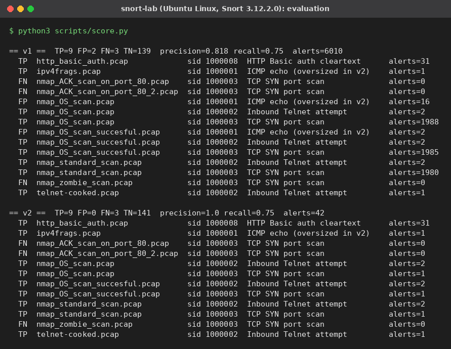

Summary. I built a Snort 3.12.2.0 IDS, wrote nine custom rules covering all eight required categories, and evaluated them against 17 traffic captures: 16 public samples plus a 60-second benign baseline recorded on my own laptop. After tuning, the IDS detected 9 of 12 expected (rule, capture) detections with no false positives, giving precision 1.00 and recall 0.75. Tuning also cut total alert volume from 6,010 to 42. All three misses are Nmap scan types (ACK and idle/zombie) that never send the SYN packets my scan rule keys on. Five of the nine rules had no positive test traffic in this dataset. They are syntax-validated and produced no false positives, but their detection rate is untested, and I report them that way rather than estimating a number.
Environment. Snort 3.12.2.0 with DAQ 3.0.27, LuaJIT 2.1 and libpcap 1.10.4, built from the official snort3/snort3 and snort3/libdaq sources on Ubuntu Linux (x86_64). I first tried to install Snort on my own laptop, an Intel MacBook Pro running macOS 15.7.7, with brew install snort. The install failed because Homebrew no longer supports Intel macOS ("Tier 3"): it ships no prebuilt packages there, and the source build of the cmake dependency failed. I therefore ran the IDS in a Linux lab environment. The benign baseline capture was still recorded on the Mac with tcpdump.
Mode. Snort runs in passive IDS mode, reading captures with -r (PCAP readback through the pcap DAQ) and writing alerts in alert_fast format. Packets pass through the decoder, IP defragmentation and TCP stream reassembly. The wizard then identifies the service and hands traffic to the matching inspector (http_inspect, ftp_server, telnet). The detection engine evaluates the custom rules, and the event_filter limits repetitive alerts before they are logged.
Configuration. config/snort.lua is the stock Snort 3 configuration with two edits: HOME_NET = '192.168.56.0/24' and EXTERNAL_NET = '!$HOME_NET', plus an include 'tuning_v2.lua' for alert-volume limits. For evaluation, snort_eval.lua sets both variables to any, because the public captures use many unrelated address ranges. Rule direction (client → server ports) still applies. Section 6 discusses this as a limitation.

All rules live in rules/local.rules (SIDs 1000001 to 1000009, local range). rules/local_v1.rules keeps the pre-tuning versions of rules 1 and 6. Each rule was written for this project; none is copied from the community ruleset.
| # | Category | SID | Detects | Proto | Source → Destination | Ports |
|---|---|---|---|---|---|---|
| 1 | ICMP | 1000001 | Oversized ICMP echo request | ICMP | EXTERNAL → HOME | n/a |
| 2 | TCP | 1000002 | Inbound Telnet connection attempt | TCP | EXTERNAL → HOME | any → 23 |
| 3 | Reconnaissance | 1000003 | TCP SYN port scan (rate-based) | TCP | EXTERNAL → HOME | any → any |
| 4 | HTTP / application | 1000004 | Path traversal to /etc/passwd | HTTP | EXTERNAL → HOME | HTTP service (any) |
| 5 | Suspicious payload | 1000005 | SQL injection (UNION … SELECT) in URI | HTTP | EXTERNAL → HOME | HTTP service (any) |
| 6 | Repeated requests | 1000006 | High-rate HTTP GETs from one source | HTTP | EXTERNAL → HOME | HTTP service (any) |
| 7 | Authentication | 1000007 | Repeated FTP login failures (530) | TCP/FTP | HOME:21 → EXTERNAL | 21 → any |
| 8 | Additional (auth) | 1000008 | HTTP Basic credentials in cleartext | HTTP | EXTERNAL → HOME | HTTP service (any) |
| 9 | Additional (auth) | 1000009 | Repeated SSH connection attempts | TCP | EXTERNAL → HOME | any → 22 |
alert icmp $EXTERNAL_NET any -> $HOME_NET any ( msg:"LOCAL ICMP oversized echo request from external host"; itype:8; dsize:>800; classtype:attempted-recon; sid:1000001; rev:2; )
ICMP echo requests (type 8) from outside the network carrying more than 800 bytes of payload. Standard ping tools send 32 to 64 bytes. Very large echo payloads point to ICMP tunneling (data smuggled inside pings), ping-flood or bandwidth abuse, or fragmentation-based attacks.
How it matches: itype:8 (echo request) and dsize:>800. Snort reassembles IP fragments first, so the size check sees the full payload. Expected alert and test capture: "LOCAL ICMP oversized echo request…" on ipv4frags.pcap (1,384-byte echo, fragmented). Silent on normal pings and on Nmap's 120/150-byte OS-detection probes.
alert tcp $EXTERNAL_NET any -> $HOME_NET 23 ( msg:"LOCAL TCP inbound Telnet connection attempt"; flags:S; classtype:policy-violation; sid:1000002; rev:1; )
A TCP SYN (new connection) from outside the network to port 23. Telnet sends usernames, passwords and commands in cleartext. Exposed Telnet is a long-standing target for credential theft and botnets (e.g. Mirai), so any inbound attempt is either a policy violation or probing.
How it matches: Destination port 23 and flags:S (SYN only). Matching the SYN alerts once per connection rather than once per keystroke packet. Expected alert and test capture: telnet-cooked.pcap (a real Telnet session), plus the three Nmap SYN/OS scans, which probe port 23.
alert tcp $EXTERNAL_NET any -> $HOME_NET any ( msg:"LOCAL SCAN possible TCP SYN port scan"; flags:S; detection_filter:track by_src, count 20, seconds 5; classtype:attempted-recon; sid:1000003; rev:1; )
One source sending more than 20 connection attempts (SYNs) within 5 seconds, to any ports. Legitimate clients open a handful of connections to known services. A burst of SYNs across many ports is the signature of port scanning, the reconnaissance step that precedes most attacks.
How it matches: flags:S with detection_filter tracked by source address. In v2, an event_filter (limit 1 per source per 60 s) stops a single scan from producing thousands of alerts. Expected alert and test capture: The Nmap standard and OS-detection scans. The ACK and idle scans are also labeled as scanning, and this rule is expected to miss them (see Section 5).
alert http $EXTERNAL_NET any -> $HOME_NET any ( msg:"LOCAL HTTP path traversal request for /etc/passwd"; flow:to_server,established; http_uri; content:"/etc/passwd",nocase; classtype:web-application-attack; sid:1000004; rev:1; )
An HTTP request whose URI references /etc/passwd. No legitimate web request asks a server for its system account file. The string appears in directory-traversal and local-file-inclusion attempts that try to escape the web root.
How it matches: Established client-to-server HTTP flow, matched in the http_uri buffer. That buffer is normalized by http_inspect, so percent-encoded variants (%2Fetc%2Fpasswd) and ../ sequences are decoded before matching. The rule uses the http service keyword, so it works on any port the wizard identifies as HTTP, not just port 80. Expected alert and test capture: Any HTTP request for the file. No such request exists in this test set, so the rule is untested for detection. It produced 0 alerts on the 5 benign HTTP captures.
alert http $EXTERNAL_NET any -> $HOME_NET any ( msg:"LOCAL HTTP SQL injection UNION SELECT in URI"; flow:to_server,established; http_uri; content:"union",nocase; content:"select",nocase,distance 0; classtype:web-application-attack; sid:1000005; rev:1; )
The keyword union followed (anywhere later) by select in the request URI. UNION-based SQL injection appends a second query to read data from other tables. These SQL keywords have no business in a normal URL's query string.
How it matches: Two case-insensitive contents in the normalized URI. distance 0 requires "select" to appear after "union", which avoids matching unrelated text that merely contains both words in the other order. Expected alert and test capture: No SQL-injection capture in this set, so the rule is untested for detection. 0 alerts on benign HTTP, including a long ad-server query string in http.pcap.
alert http $EXTERNAL_NET any -> $HOME_NET any ( msg:"LOCAL HTTP high-rate GET requests from single source"; flow:to_server,established; http_method; content:"GET"; detection_filter:track by_src, count 200, seconds 10; classtype:attempted-dos; sid:1000006; rev:2; )
More than 200 HTTP GET requests from one source within 10 seconds. Sustained request rates far above human browsing indicate application-layer flooding (HTTP DoS), aggressive scraping, or automated content discovery and brute forcing.
How it matches: Method buffer equals GET, rate-limited by source with detection_filter. Version 1 used 50 per 10 s. I raised it to 200 because a single modern page load can fetch 50+ assets, so 50 risks flagging ordinary visitors. This tuning is preventive: no capture here exercised either threshold. Expected alert and test capture: None in this test set (untested for detection). 0 alerts on all benign HTTP.
alert tcp $HOME_NET 21 -> $EXTERNAL_NET any ( msg:"LOCAL AUTH repeated FTP login failures"; flow:to_client,established; content:"530 ",depth 4; detection_filter:track by_dst, count 5, seconds 60; classtype:unsuccessful-user; sid:1000007; rev:1; )
The FTP server answering one client with "530" (login incorrect) more than 5 times within 60 seconds. One or two failures are normal typos. A rapid run of failures to the same client is password guessing.
How it matches: The rule watches the server's reply, not the client's attempt, so it counts only failures. depth 4 anchors "530 " at the start of the response line. Tracking is by_dst because in the server's reply the attacker is the destination. Expected alert and test capture: Neither FTP capture contains a single 530 (both show successful 230 logins), so the rule is untested for detection. It correctly stayed silent on successful logins.
alert http $EXTERNAL_NET any -> $HOME_NET any ( msg:"LOCAL HTTP Basic auth credentials sent in cleartext"; flow:to_server,established; http_header:field authorization; content:"Basic ",depth 6; classtype:policy-violation; sid:1000008; rev:1; )
An HTTP request carrying an Authorization: Basic … header over unencrypted HTTP. Basic authentication only base64-encodes username:password, which is trivially reversible. Over plain HTTP, anyone on the path can harvest the credentials.
How it matches: Restricted to the authorization header field. "Basic " must start the field, so Digest and NTLM authentication, which do not expose the password, are not flagged. Expected alert and test capture: http_basic_auth.pcap fires on all 31 requests carrying the header. http_digest_auth.pcap must not fire.
alert tcp $EXTERNAL_NET any -> $HOME_NET 22 ( msg:"LOCAL AUTH repeated SSH connection attempts"; flags:S; detection_filter:track by_src, count 5, seconds 60; classtype:attempted-user; sid:1000009; rev:1; )
More than 5 new SSH connections from one external source within 60 seconds. SSH is encrypted, so failed logins cannot be seen in the payload. Password-guessing tools, however, typically open a new connection for each attempt or small batch, so the connection rate is a usable proxy.
How it matches: SYN to port 22, rate-limited by source. The v2 event filter limits it to one alert per source per minute. Expected alert and test capture: No SSH brute-force capture in this set (untested for detection). The Nmap scans touch port 22 only twice each, under the threshold, and correctly did not trigger it.
Test data. I used 17 captures with known content and no synthetic attack traffic. From the Wireshark sample-capture library I took five: an ICMP echo with a 1,384-byte payload sent in fragments (ipv4frags.pcap), a Telnet session (telnet-cooked.pcap), and three benign captures of normal web browsing, DNS lookups and an FTP session over IPv6. The same library's Nmap collection added six real scans: a default SYN scan, two OS-detection scans (one failed, one successful), two ACK scans of port 80 (the second using fragmentation and a spoofed source address to evade an IDS), and an idle/zombie scan. From the BruteShark project's examples I took an HTTP session that sends Basic-authentication credentials 31 times, plus four contrast cases: Digest authentication, a successful FTP login, and two ordinary file downloads. Finally, I recorded 60 seconds of my own browsing with tcpdump (normal_mac.pcap, 9,287 packets, mostly TLS and QUIC) as a benign baseline.
Ground truth. I labeled each capture from its published description and verified the label with tshark before running Snort: SYN counts, ports probed, ICMP payload sizes, FTP reply codes and Authorization headers. Labels are stored in ground_truth.csv. For example, every Nmap SYN/OS scan sends SYNs to port 23, so those captures are labeled positive for the Telnet rule. The ACK scans send no SYNs, but they are still reconnaissance, so they are labeled positive for the scan rule even though I expected it to miss them.
Unit of measurement. Each (rule, capture) pair is one test case: 9 rules × 17 captures = 153 cases per rule version. A case is a TP if the capture contains the behavior and the rule fired at least once, FN if it contains the behavior and the rule stayed silent, FP if the rule fired without the behavior, and TN otherwise. I chose pairs rather than individual packets because alert counts depend on thresholds and filters, while the analyst's question is "was this activity detected?"
Procedure. scripts/run_tests.sh runs Snort over every capture twice, first with the v1 rules and config and then with v2 (tuned rules plus tuning_v2.lua), using snort -c <conf> -R <rules> -r <pcap> -A alert_fast -q -k none. -k none disables checksum verification, because captures taken on the sending host often contain offloaded (unset) checksums that would otherwise make Snort discard packets. scripts/score.py compares the alert files to the ground truth and writes results/.
| Traffic scenario | Capture(s) | Expected detection | Detected? | Alert generated | False positive? |
|---|---|---|---|---|---|
| ICMP activity (oversized echo) | ipv4frags | Yes | Yes | 1 × SID 1000001 | No (v1: Yes, see 5.1) |
| TCP activity (Telnet) | telnet-cooked; 3 Nmap SYN/OS scans | Yes | Yes (4/4) | 1 to 2 × SID 1000002 each | No |
| Scanning (SYN-based) | nmap standard, OS, OS-successful | Yes | Yes (3/3) | 1 × SID 1000003 each (v1: ~1,980 each) | No |
| Scanning (ACK / idle) | 2 ACK scans, zombie scan | Yes | No (0/3) | none | No |
| HTTP activity (benign) | http, jpg & pdf downloads, digest auth | No | No | none | No |
| HTTP attack: traversal (rule 4) | no positive sample | n/a | Not tested | none | No |
| Suspicious payload: SQLi (rule 5) | no positive sample | n/a | Not tested | none | No |
| Repeated requests (rule 6) | no positive sample | n/a | Not tested | none | No |
| Authentication: HTTP Basic (rule 8) | http_basic_auth | Yes | Yes | 31 × SID 1000008 | No (Digest correctly ignored) |
| Authentication: FTP (rule 7) | ftp_login, ftpv6 (successful logins) | No | No | none | No |
| Authentication: SSH (rule 9) | no positive sample | n/a | Not tested | none | No |
| Benign baseline | normal_mac, dns | No | No | none | No |
| Version | TP | FP | FN | TN | Precision TP/(TP+FP) | Recall / detection rate TP/(TP+FN) | Total alerts |
|---|---|---|---|---|---|---|---|
| v1 (before tuning) | 9 | 2 | 3 | 139 | 0.818 | 0.750 | 6,010 |
| v2 (tuned) | 9 | 0 | 3 | 141 | 1.000 | 0.750 | 42 |
The TN count is large because most rules are irrelevant to most captures, so accuracy would look inflated (97 to 98%). Precision and recall are the meaningful figures. Recall covers only the four rules that had positive samples (1, 2, 3 and 8). Rules 4 to 7 and 9 contribute only TNs, which shows they did not misfire on benign traffic but says nothing about whether they would catch an attack.
Rule 1 (ICMP). Version 1 matched every external echo request (itype:8 alone), so it fired on the 120- and 150-byte probes that Nmap's OS detection sends, and it would fire on any ordinary ping. Adding dsize:>800 made it describe the abnormal property instead of ICMP itself. False positives fell from 2 to 0 and precision rose from 0.818 to 1.000, while the real oversized echo was still detected.
Alert volume. detection_filter raises an alert on every packet past the threshold, so a single scan produced about 1,980 identical alerts. I added an event_filter (config/tuning_v2.lua) limiting rules 3, 7 and 9 to one alert per source (or destination) per 60 seconds. Scan alerts dropped from 5,953 to 3 and total alerts from 6,010 to 42, with no change in true positives.
Rule 6 (request flood). I raised the threshold from 50 to 200 GETs per 10 seconds as a precaution, because one modern page load can request 50+ assets. No capture in this set reached either threshold, so the effect could not be measured.
Both v1 false positives came from rule 1 on the Nmap OS-detection captures (16 alerts on nmap_OS_scan, 2 on nmap_OS_scan_succesful). Nmap's OS fingerprinting sends ICMP echo requests with 120- and 150-byte payloads. The v1 rule matched any echo request, so it flagged these probes as the ICMP-abuse behavior it was meant to catch. They are part of a scan, but that scan was already detected by rule 3, and the same v1 rule would also fire on every ordinary ping from outside the network. The root cause was a rule condition (itype:8 alone) that described ICMP itself rather than the abnormal property. Adding a size condition fixed it. My own baseline happened to contain no pings, so the FP evidence comes only from the Nmap captures.
ACK scans (2 captures). nmap -sA sends bare ACK packets to map firewall rules. The scan rule requires flags:S, so it is blind to them by design. The second capture adds fragmentation (-f) and a spoofed source (-S), techniques its author used specifically to evade IDS. Even an ACK-aware rule would attribute it to the wrong host.
Idle (zombie) scan. In nmap -sI, the target receives only 2 SYNs, spoofed from the zombie's address. The rest of the traffic is the attacker probing the zombie's IP ID counter. Two SYNs are far below the 20-in-5-seconds threshold, and the true attacker never talks to the target at all. A rate-based rule cannot catch a scan that sends almost no packets to the victim.
These misses show the core limit of threshold signatures: they detect the noisy default behavior of a tool, and an attacker who changes the scan type or slows down slips under them.
All screenshots are real terminal output from the lab environment, rendered to images by scripts/render_terminal.py.





